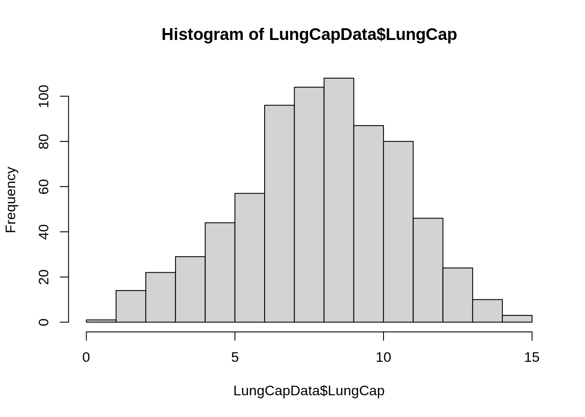
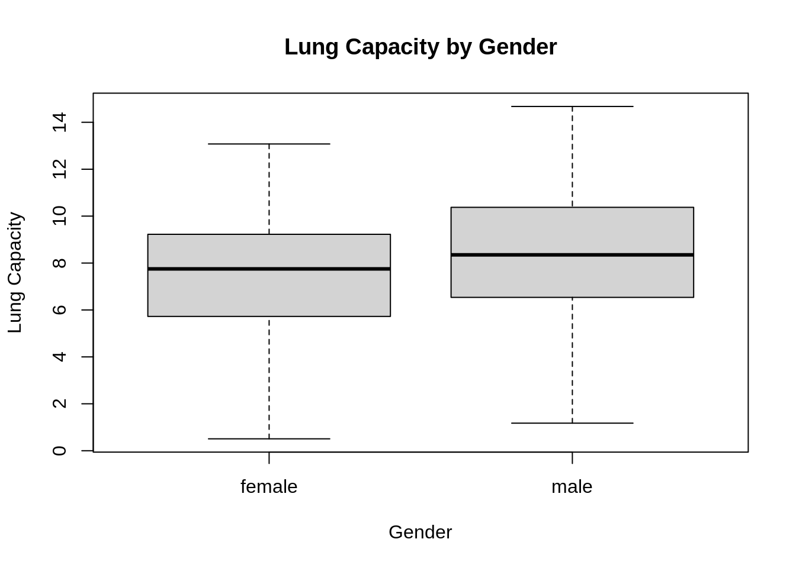
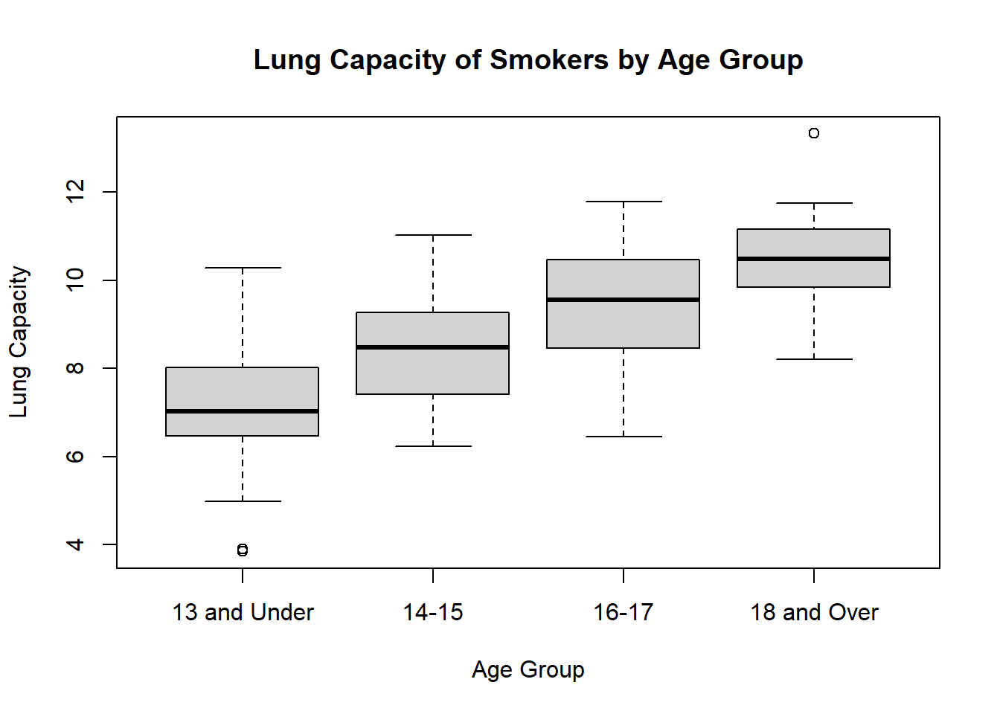
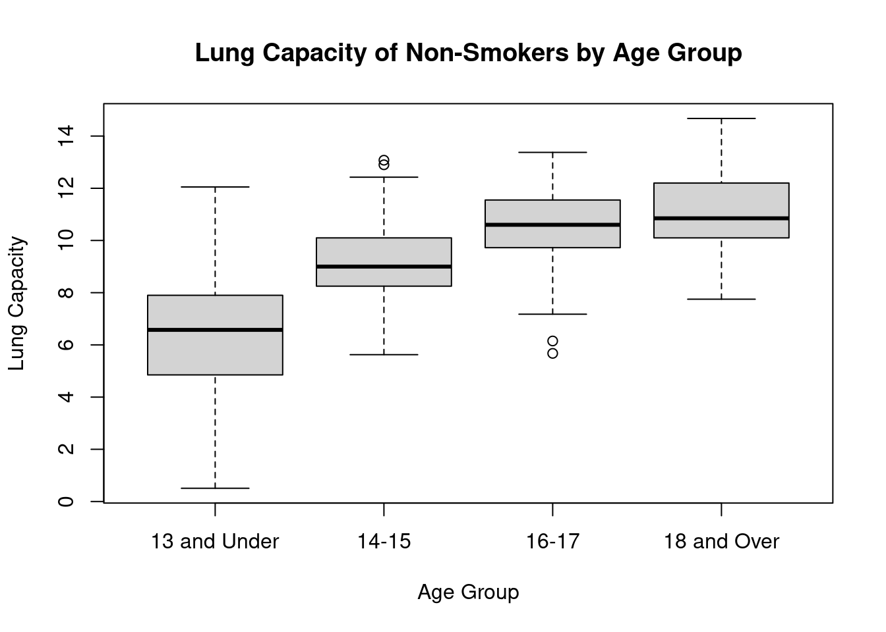

knitr::opts_chunk$set(echo =TRUE)# Reading in FileLungCapData <-read_excel("_data/LungCapData.xls")
Part A: Distribution
Code
hist(LungCapData$LungCap)

The histogram above shows that the Lung Cap data is roughly normally distributed because a majority of the observations are centered around the mean. There are fewer observations at the tail ends of the histogram.
Part B: Probability Distribution of LungCap (Males vs. Females)
Code
boxplot(LungCap ~ Gender, data = LungCapData, main ="Lung Capacity by Gender",xlab ="Gender", ylab ="Lung Capacity")

From the box-plots above, it appears that males in this study had slightly higher lung capacities than females, with the median for males at 9 and the median for females at 8. However, both genders had large ranges, but these ranges reflected the overall pattern of males having slightly higher lung capacities.
The mean lung capacity for smokers (8.65) is higher than the mean lung capacity for non-smokers (7.77). Based on what we now know about how smoking affects the lungs, these results don’t seem to make sense. However, there is the possibility that smokers may be more used to deep inhales/exhales and therefore could have better lung capacity until the substance has more of an effect on their lungs. There may also be external factors that led to these results that aren’t clear from the data right now.
Part D: Lung Capacity by Smoker/Non-Smoker and Age
Code
LungCapData <-within(LungCapData, { Age.group <-NA Age.group[Age <=13] <-"13 and Under" Age.group[Age >=14& Age <=15] <-"14-15" Age.group[Age >=16& Age <=17] <-"16-17" Age.group[Age >=18] <-"18 and Over"} )
Smokers
Code
# Boxplotssmoking_age <-filter(LungCapData, Smoke =="yes")boxplot(LungCap ~ Age.group, data = smoking_age,main ="Lung Capacity of Smokers by Age Group",xlab ="Age Group", ylab ="Lung Capacity")

From the boxplot above, we can see that smokers’ lung capacities reach about a maximum of 12 as age increases, but there is not very much improvement in the maximums. The medians move a bit more as age increases, but still not very dramatically after ages 14 and 15. Smokers that are 18 and over have higher lung capacities overall, but this may just be because of natural aging processes and development.
# A tibble: 4 × 2
Age.group name
<chr> <dbl>
1 13 and Under 7.20
2 14-15 8.39
3 16-17 9.38
4 18 and Over 10.5
We see the same trend in means as in the medians: mean lung capacity to increases as the age increases.
Non-Smokers
Code
# Boxplotnonsmoking_age <-filter(LungCapData, Smoke =="no")boxplot(LungCap ~ Age.group, data = nonsmoking_age,main ="Lung Capacity of Non-Smokers by Age Group",xlab ="Age Group", ylab ="Lung Capacity")

In non-smokers, we see the same trend of increasing lung capacities as age increases, but the median lung capacities in the two older age groups in the non-smoking group are higher than those in the smoking group. There are also more outliers for non-smokers, especially in the 14-15 category.
# A tibble: 4 × 2
Age.group name
<chr> <dbl>
1 13 and Under 6.36
2 14-15 9.14
3 16-17 10.5
4 18 and Over 11.1
The means of the non-smoking group by age follow the same trend as the medians, as well as in the smoking group. However, the mean lung capacity for the oldest two age groups in the non-smoking category are higher than the means for those groups in the smoking category.
Part E: Lung Capacities for Smokers and Non-Smokers within Age Group
13 and Under
Code
LungCapData %>%filter(Age.group =="13 and Under") %>%group_by(Smoke) %>%summarise_at(vars(LungCap), list(name = mean))
# A tibble: 2 × 2
Smoke name
<chr> <dbl>
1 no 6.36
2 yes 7.20
The mean lung capacity for smokers is higher than the mean lung capacity for non-smokers in the age group 13 and under, which mirrors the general means we found earlier. However, from the boxplot of Smokers by Age Group, we can see that there is a very low outlier in this age group, which might be affecting the mean for this group as well as overall smokers.
# A tibble: 2 × 2
Smoke name
<chr> <dbl>
1 no 10.5
2 yes 9.38
The same trend continues in this age group, with the mean lung capacity in non-smokers ages 16 and 17 higher than the mean lung capacity of smokers in this group. Yet as the ages increase, the mean lung capacities for non-smokers and smokers increase about the same amount (by 1).
18 and Over
Code
LungCapData %>%filter(Age.group =="18 and Over") %>%group_by(Smoke) %>%summarise_at(vars(LungCap), list(name = mean))
# A tibble: 2 × 2
Smoke name
<chr> <dbl>
1 no 11.1
2 yes 10.5
In this oldest age group, the same trend continues: the mean lung capacity for non-smokers is higher than that of smokers. This pattern in the groups 18+, 16-17, and 14-15 are not found in the overall means for smokers and nonsmokers, suggesting that the outlier in the 13 and Under group might have brought down the overall mean for smokers.
Part F: Correlation & Covariance
Code
# Correlationcor(LungCapData$Age, LungCapData$LungCap, use ="everything")
[1] 0.8196749
The correlation between lung capacity and age is positive and strong. As age increases, lung capacity also increases. The value of 0.8 is close to 1, meaning there is a somewhat strong relationship between the two variables.
Code
# Covariancecov(LungCapData$Age, LungCapData$LungCap, use ="everything")
[1] 8.738289
The covariance is positive, meaning that there is a positive relationship between the varaibles, which is also clear from the correlation (since the correlation coefficient is a function of the covariance). Age and lung capacity have an overall positive relationship: as age increases, so does lung capacity.
The expected value for the number of prior convictions is 1.27–but since prior convictions have to be a whole number, that would be rounded to 1.
Part F
Code
var(convict)
[1] 0.8572937
Code
sd(convict)
[1] 0.9259016
Source Code
---title: "DACSS 603 HW 1 Kimble"author: "Karen Kimble"description: "HW 1 for DACSS 603"date: "10/03/2022"format: html: toc: true code-fold: true code-copy: true code-tools: trueeditor: visual---# Question 1: Lung Capacity### Setup```{r}library(dplyr)library(readxl)library(tidyverse)knitr::opts_chunk$set(echo =TRUE)# Reading in FileLungCapData <-read_excel("_data/LungCapData.xls")```## Part A: Distribution```{r}hist(LungCapData$LungCap)```The histogram above shows that the Lung Cap data is roughly normally distributed because a majority of the observations are centered around the mean. There are fewer observations at the tail ends of the histogram.## Part B: Probability Distribution of LungCap (Males vs. Females)```{r}boxplot(LungCap ~ Gender, data = LungCapData, main ="Lung Capacity by Gender",xlab ="Gender", ylab ="Lung Capacity")```From the box-plots above, it appears that males in this study had slightly higher lung capacities than females, with the median for males at 9 and the median for females at 8. However, both genders had large ranges, but these ranges reflected the overall pattern of males having slightly higher lung capacities.## Part C: Smokers vs. Non-Smokers```{r}smokers <-filter(LungCapData, Smoke =="yes")mean(smokers$LungCap)nonsmokers <-filter(LungCapData, Smoke =="no")mean(nonsmokers$LungCap)```The mean lung capacity for smokers (8.65) is higher than the mean lung capacity for non-smokers (7.77). Based on what we now know about how smoking affects the lungs, these results don't seem to make sense. However, there is the possibility that smokers may be more used to deep inhales/exhales and therefore could have better lung capacity until the substance has more of an effect on their lungs. There may also be external factors that led to these results that aren't clear from the data right now.## Part D: Lung Capacity by Smoker/Non-Smoker and Age```{r}LungCapData <-within(LungCapData, { Age.group <-NA Age.group[Age <=13] <-"13 and Under" Age.group[Age >=14& Age <=15] <-"14-15" Age.group[Age >=16& Age <=17] <-"16-17" Age.group[Age >=18] <-"18 and Over"} )```### Smokers```{r}# Boxplotssmoking_age <-filter(LungCapData, Smoke =="yes")boxplot(LungCap ~ Age.group, data = smoking_age,main ="Lung Capacity of Smokers by Age Group",xlab ="Age Group", ylab ="Lung Capacity")```From the boxplot above, we can see that smokers' lung capacities reach about a maximum of 12 as age increases, but there is not very much improvement in the maximums. The medians move a bit more as age increases, but still not very dramatically after ages 14 and 15. Smokers that are 18 and over have higher lung capacities overall, but this may just be because of natural aging processes and development.```{r}# Meanssmoking_age %>%group_by(Age.group) %>%summarise_at(vars(LungCap), list(name = mean))```We see the same trend in means as in the medians: mean lung capacity to increases as the age increases.### Non-Smokers```{r}# Boxplotnonsmoking_age <-filter(LungCapData, Smoke =="no")boxplot(LungCap ~ Age.group, data = nonsmoking_age,main ="Lung Capacity of Non-Smokers by Age Group",xlab ="Age Group", ylab ="Lung Capacity")```In non-smokers, we see the same trend of increasing lung capacities as age increases, but the median lung capacities in the two older age groups in the non-smoking group are higher than those in the smoking group. There are also more outliers for non-smokers, especially in the 14-15 category.```{r}# Meansnonsmoking_age %>%group_by(Age.group) %>%summarise_at(vars(LungCap), list(name = mean))```The means of the non-smoking group by age follow the same trend as the medians, as well as in the smoking group. However, the mean lung capacity for the oldest two age groups in the non-smoking category are higher than the means for those groups in the smoking category.## Part E: Lung Capacities for Smokers and Non-Smokers within Age Group### 13 and Under```{r}LungCapData %>%filter(Age.group =="13 and Under") %>%group_by(Smoke) %>%summarise_at(vars(LungCap), list(name = mean))```The mean lung capacity for smokers is higher than the mean lung capacity for non-smokers in the age group 13 and under, which mirrors the general means we found earlier. However, from the boxplot of Smokers by Age Group, we can see that there is a very low outlier in this age group, which might be affecting the mean for this group as well as overall smokers.### 14-15```{r}LungCapData %>%filter(Age.group =="14-15") %>%group_by(Smoke) %>%summarise_at(vars(LungCap), list(name = mean))```In this age group, the mean lung capacity for non-smokers is higher than the mean lung capacity for smokers--unlike the younger group.### 16-17```{r}LungCapData %>%filter(Age.group =="16-17") %>%group_by(Smoke) %>%summarise_at(vars(LungCap), list(name = mean))```The same trend continues in this age group, with the mean lung capacity in non-smokers ages 16 and 17 higher than the mean lung capacity of smokers in this group. Yet as the ages increase, the mean lung capacities for non-smokers and smokers increase about the same amount (by 1).### 18 and Over```{r}LungCapData %>%filter(Age.group =="18 and Over") %>%group_by(Smoke) %>%summarise_at(vars(LungCap), list(name = mean))```In this oldest age group, the same trend continues: the mean lung capacity for non-smokers is higher than that of smokers. This pattern in the groups 18+, 16-17, and 14-15 are not found in the overall means for smokers and nonsmokers, suggesting that the outlier in the 13 and Under group might have brought down the overall mean for smokers.## Part F: Correlation & Covariance```{r}# Correlationcor(LungCapData$Age, LungCapData$LungCap, use ="everything")```The correlation between lung capacity and age is positive and strong. As age increases, lung capacity also increases. The value of 0.8 is close to 1, meaning there is a somewhat strong relationship between the two variables.```{r}# Covariancecov(LungCapData$Age, LungCapData$LungCap, use ="everything")```The covariance is positive, meaning that there is a positive relationship between the varaibles, which is also clear from the correlation (since the correlation coefficient is a function of the covariance). Age and lung capacity have an overall positive relationship: as age increases, so does lung capacity.# Question 2: Prisoner Convictions## Part A```{r}160/810```## Part B```{r}(434+128)/810```## Part C```{r}(160+434+128)/810```## Part D```{r}(64+24)/810```## Part E```{r}# Creating vectorconvict <-c(rep(0, 128), rep(1, 434), rep(2, 160), rep(3, 64), rep(4, 24))weighted.mean(convict)```The expected value for the number of prior convictions is 1.27--but since prior convictions have to be a whole number, that would be rounded to 1.## Part F```{r}var(convict)sd(convict)```